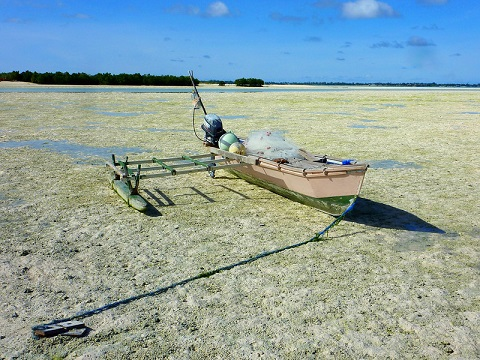
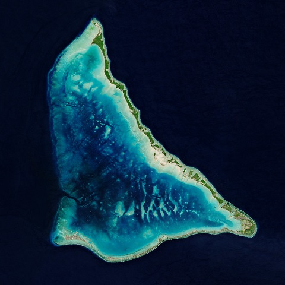

Kiritimati Island
One of the most useful canoe the island. There are different kind of these canoes were people most use for fishing and traveling from other different places. It man made were people use their skills to contruct it.

This is the picture of one of the island were people always look at it on the map. A lot of people use the picture to find places to visit on the island. The island took like half a day walking to the end